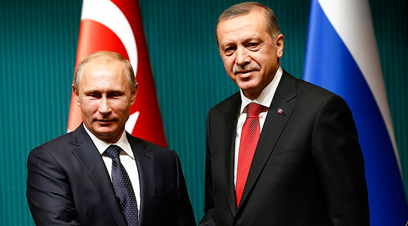
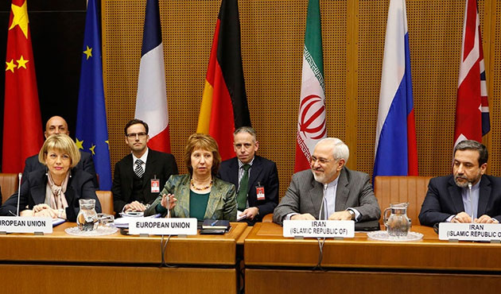
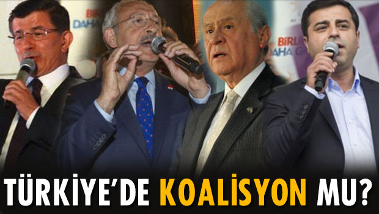

Rusya-AB-Türkiye Üçgeninde Türk Akımı
Perspektif
07 Temmuz 2015 Salı
Güney Akım yerine Türk Akımı’nın tercih edilmesinin nedenleri nelerdir? Türk Akımı’nın muhtemel geçiş güzergahının diğer projelere etkisi nasıl olur?


İran Nükleer Mütabakatının Muhtemel Bölgesel Sonuçları
İran nükleer mutabakatı Ortadoğu’daki düzeni nasıl etkileyecek? Mutabakatın ardından ekonomide hangi gelişmeler beklenmeli?
Denetim ve Özgürlük İkileminde İnternet Erişimi
Bu çalışma Türkiye’deki erişimin engellenmesi rejimine yoğunlaşarak geri planda kalan teknik ve hukuki boyutu tartışmayı amaçlamaktadır.

Türkiye’nin Koalisyon Tecrübesi: Modeller ve Siyasal Gerçeklikler
Koalisyon modelleri ve dinamikleri nelerdir? Türkiye’de genel seçimler sonrası oluşturulan koalisyonlar hangi modele uygundur?